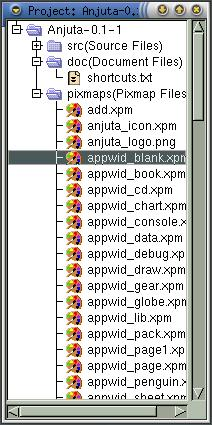

|
|
Anjuta Manual version 0.1Copyright (c) Kh. Naba Kumar Singh |
| Contents | Index | Shortcuts |
| PREV:Creating a new project | UP:Concept of project management | NEXT:Adding and removing files |
Loading project:

To open a project, activate the menu item File->Open Project. Select the project file (*.prj) in the file selection box and Click OK.
If the project has recently been opened, then you will find the project in the menu File->Recent Project. Activate it and the project will be opened.
As soon as a project is opened. Anjuta will enter into the Project mode of operation.
Saving project:
Project is saved automatically if Anjuta thinks it needs to be saved. Hence, you don't have to worry about this thing. If you want to save it explicitly, then can do it by activating the menu item File->Save project or by clicking the save project icon in the extended tool-bar.